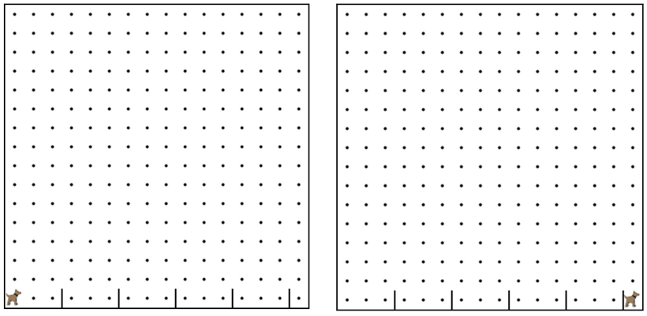

Write a program to have karel jump over each of the hurdles,
and end up up at the other end of the world. There are 5 hurdles,
which occur after every three avenues. You must use for loops and
functions in this program.
編寫一個程序，有卡雷爾躍過每一個障礙，並最終達在世界的另一端。有5個關卡，
每三個途徑後發生。您必須使用為循環和功能這一計劃。
You must write a function named jumpHurdle() as part of your solution.
你必須寫一個函數命名的跨欄跳（）作為解決方案的一部分。

for(var i = 0; i < COUNT; i++){ 對於（可變 i = 0; i < 算; i++){
/* Repeat code betweeen 之間的重複代碼
* brackets COUNT times */ 括號算時
}
/* Move ten times */ 移動十次
for(var i = 0; i < 10; i++){ 對於（可變 i = 0; i < 10; i++){
move(); 移動（）;
}
// For loops can have multiple lines in them!
for(var i = 0; i < 5; i++){ 對於（可變 i = 0; i < 5; i++){
move(); 移動（）;
putBall(); 放球（）;
}